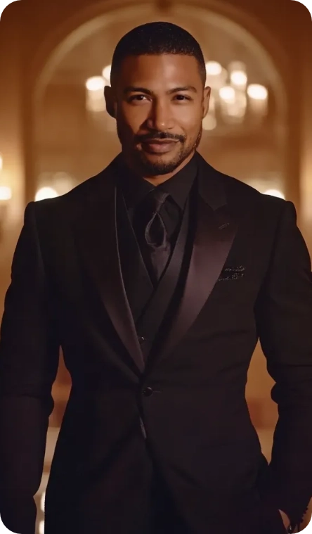
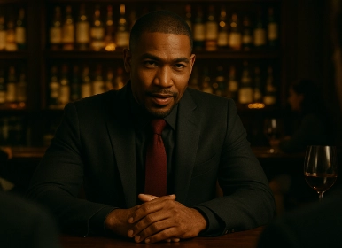
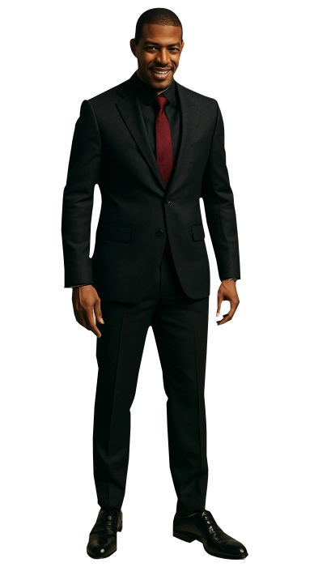
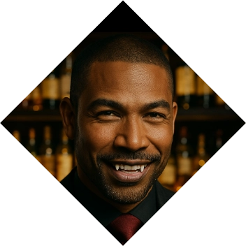
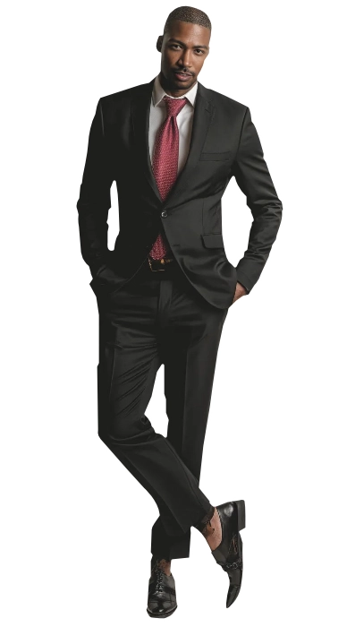

Arron Price
Arron Price
The Leader
The life in the streets is hard, and Arron Price knew it from the start. The illegitimate son of a wealthy man, Arron had a hard time trying to connect with his father, who rarely spent time with him or his mother, considering them to be unworthy. The rejection marked Arron who started a plan to get back to the old man... a plan that took years to happen but finally succeeded when Arron became a star in finances and numbers and helped the rival company of his father's to succeed and eventually, to buy it out of the market. The incredible strategy put him in the sight of the Camarilla vampires who required someone with his drive and talent.
Another ruthless black vampire, realizing of the potential it had to control and defeat their oponent, the unmatched Fiorenza Savonna, decided to Embrace him, soon making him part of his world and taking the advice of the young protege... if only Savonna didn't have friends in high places, the fall from grace wouldn´t have been worse. Arron soon understood that only the strong and intelligent survive in the night. Having recently lost after defying the Premier of Mexico, the vampire was exiled to Montreal as a proof to the clan that he was ready to take the night. ❧
Plot Hooks.
Leadership. He is good at giving orders and making things happen. He enjoys diplomacy and while it may not look like it, those who are with him are usually well rewarded. Dom/sub dynamics as well as power play and age play go well with him.Signature Motif.
Stoicism. Maybe it is because his phlegmatic blood makes him become more silent or less available, but he's constantly quiet and lost in thinking. Rarely will submit and he doesn't like to open himself to others.Perfect for...
Diplomatic sexy threads. He is a king in his own right and while it seems that he's the second in command to some big scheme, nothing of said plan happens without going through him. You can come at him if you wanna learn more about the operation to either take it to his enemies or to join him in taking Montreal.Goal
Control.
The city was once ruled by the Sabbath and while it had been cleared out by recent forces of Project Twilight, the vampires are now looking to divide the city and regain control of it. Arron sees a perfect opportunity for him and other colleagues to take a bigger slice of the cake, but the rumors are that there are forces bigger than him...
obstacle
Demons.
...those being Demons. The rumors are that there is a Demon imprisioned in Mount Royal that forces beyond his comprehension are trying to remove. He knows this is way over his head which is the reason why he complies and works with the Society and with other unlikely fellows, such as Daze or the werewolves.«I could corrupt you. It would be easy.»
Personal Data

Arron Price
Full Name
40
Apparent age
09/Dec/1960
DOB
Camarilla
Sect
Brown
Hair
Black
Eye color
Ventrue
clan
Black
Ethnicity
American
Nationality
Neonate
Rank
1.75m
Height
80 kg
Weight
English and French
Languages
Male
Gender
Homosexual
Preference
Entrepreneur
Profession
Top
Position
8" / 5.5"
length / Girth
Charles Michael Davis
Faceclaim
65
Real Age
ENTJ
MBTI
Character sheet
Attributes
Distinctions
skills
Predator
Montero

Nature
Visionary
Demeanor
Stubborn


Determined
Inspirational
Creative
Optimistic
Persuasive
Idealistic
Fanatical
Impractical
Naïve
Irrational
Inspirational
Creative
Optimistic
Persuasive
Idealistic
Fanatical
Impractical
Naïve
Irrational
Insightful
Contrarian
Open-minded
Thoughtful
Creative
Obstinate
Provocative
Intrusive
Disruptive
Argumentative
Contrarian
Open-minded
Thoughtful
Creative
Obstinate
Provocative
Intrusive
Disruptive
Argumentative
Strength
Dexterity
Stamina

Charisma

Manipulation
Composure
Intelligence
Wits
Resolve
Potency
🙪
Specialties
Finances
Negotiation
Hunt Pack
Revolvers
Persuasion
Subterfuge
Insight
Academics
Awareness
Leadership
Firearms
Streetwise
Intimidation
Athletism
Investigation
Politics
Empathy
Drive
Technology
Other skills

The Blood
Gifts
Vampiric Mending
Can heal all the damage in a scene. Wounds close and limbs reattach (if they haven't been lost for more than one hour).
Blood Surge
Can add a D6 to any attribute so long he's willing to loose blood in the process.
Blush of Life
Dramatic. When required, Arron can mimic the bodily functions of a human: warmth, breathing, even bowel movement. Pretending to eat food is also possible.
Curse
Bane: Refined Palate
The hatred he had for his father boiled into something new inside him when Embraced and now it has made him impossible to feed from others unless they are white males. The more afraid, the better.
Compulsion: Compulsion
He was born as part of the Clan of Kings and thus, when he speaks, people should obey. He needs to proclaim orders and commands so that others can follow.
Resonance: Plegmatic
Dramatic. Artists, photographers, visionaires and certain schizophrenics are part of his preferred menu. Submissive individuals give him a thrill and people with some sort of authority excite him.
Disciplines
Fortitude
Resistence
Resilience Extends his Health. When attacked, diminish the category dice of the opposite force.
Unswayable Mind Resists feats of Presence and Dominate. When attacked with any of those forms of mind or emotional control, diminish the category dice of the opposite force.
Presence
Influence
Awe / DauntArron can draw the attention / repel others in enigmatic and supernatural ways. Add one D6 to Persuasion, Subterfuge, Leadership, Etiquette or Intimidation rolls.

Dominate
mental control
Cloud Memory People can forget the last five minutes if he uses said power on them. Dramatic.
Mesmerize Offer a command to a victim that they must perform. The command cannot go against their own life or cause them harm and it needs to be on something they can willingly do. Dramatic. If required, create a D6 advantage to simulate the controlled party.
Submerged Directive The mesmerized command is now a subconscious command which will be triggered when specific conditions are met.
Backgrounds



Signature Assets
Trusted face
People rarely suspect anything from you because of the vibe your face transmits. Add a D8 to any Subterfuge contests.
Enchanting Feature: Smile
A smile that charms, disarms and sometimes, disrobes. Can add a D6 to the dice pool when required.
Retainers
A group of humans who are enslaved to him. Three white men who know of what he does and how he does it. They are bound to bring a new victim to him for Arron to hunt in the city, in exchange of money, business (which Arron uses to do money laundering) and blood.
Other Assets
Status
Well recognized among most Kindred in the Camarilla. You have a reputation as one of the men who keep the money laundering operation for the Camarilla and the Ventrue.
Contacts
A group of characters who serve him information or weapons. Players are welcome to take these roles in order to connect with Arron.
Haven: Rise 'n Shine
A series of laundromats and carwashes that are spread all over the city. There are 12 of them and they all have a small Haven with some basic ammenities in the basement which he can use if required or can be lent to other friends.